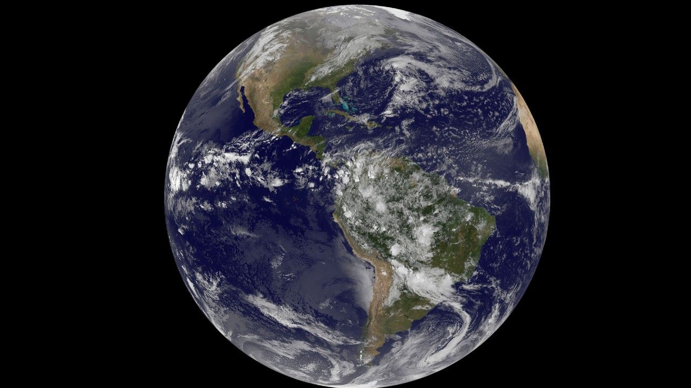

There are eight planets in our solar system, and they're all wildly different from each other.
Mercury is the smallest planet and closest to the Sun. No atmosphere, covered in craters, and one day there lasts 59 Earth days.
Venus is the hottest planet thanks to a thick CO2 atmosphere. It also spins backwards, so the Sun rises in the west there.
Home. The only planet we know of with life, liquid water, and air we can breathe.

The Red Planet gets its color from iron oxide on the surface. It's home to Olympus Mons, the biggest volcano in the solar system, and scientists are still looking for signs of past life.
The biggest planet by far. Jupiter's Great Red Spot is a storm that's been going for hundreds of years, and it has at least 95 moons.

Famous for its rings (made of ice and rock), Saturn is the second biggest planet with over 140 moons.
An ice giant that rotates on its side. It's got faint rings, 27 moons, and a blue-green look from methane in the atmosphere.
The farthest planet from the Sun. Neptune has the strongest winds in the solar system — over 1,200 mph.
Check out this video on our solar system.